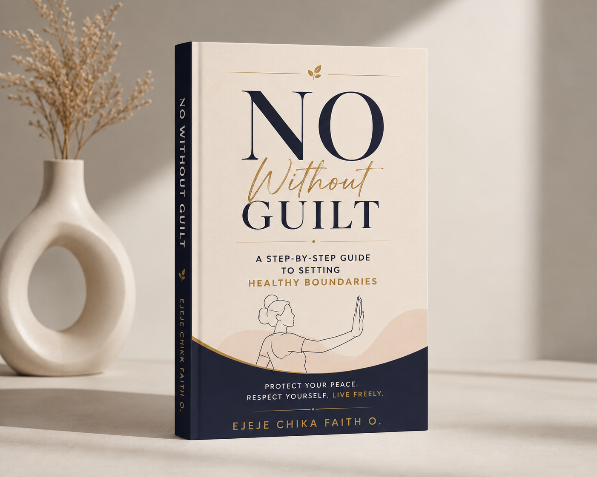

Creating Healthy Self-Images,
One Life at a Time.
Helping individuals build confidence, discover purpose and become the best version of themselves.

Helping individuals build confidence, discover purpose and become the best version of themselves.
Image Maker is a personal development platform committed to helping people develop confidence, healthy self-worth and a strong sense of purpose.
Through transformational books, coaching, speaking engagements, educational resources and advocacy, Image Maker empowers individuals to unlock their potential and create meaningful impact in their families, careers and communities.
Image Maker was founded on the belief that every individual possesses unique value, purpose, and the capacity to make meaningful impact. Behind this vision is Ejeje Chika Faith O., an educator, speaker, purpose coach, author, and passionate advocate for youth and the girl child.
Through education, coaching, books, speaking engagements, and advocacy, she inspires people to overcome limiting beliefs, discover their identity, build confidence, and pursue purposeful living.
Book a Discovery SessionA transformational memoir and self-help guide that helps readers bury low self-esteem, overcome limiting beliefs, and embrace their true identity.
Learn MoreA powerful story of purpose, resilience, and self-discovery that inspires readers to embrace their gifts and pursue meaningful impact.
Learn More
A practical guide to setting healthy boundaries, protecting your peace, and learning to say no without guilt.
Learn MoreInspiring conferences, seminars, schools, churches and organizations through transformational speaking.
Books that empower readers to develop confidence, purpose and healthy self-worth.
Helping individuals discover purpose, build confidence and maximize their potential.
Modern educational support, mentorship and personal development for learners and educators.
"Image Maker helped me rebuild my confidence and see myself differently. I now live with greater purpose and self-belief."
"Ejeje's teachings challenged my mindset and inspired me to pursue my dreams without fear."
"Image Maker gave me a new perspective on myself. I learned to stop comparing myself with others and started appreciating my own journey. The lessons are practical, encouraging, and truly transformational."
"I came to Image Maker struggling with self-doubt, but I left with a stronger sense of confidence and purpose. The message is simple, relatable, and powerful. It reminded me that becoming a better version of myself starts with how I see myself."
I'd love to hear from you. Whether you're interested in coaching, speaking engagements, collaboration, or my books, feel free to reach out.
Email: faithchikafaithful@gmail.com
Phone: +234 706 603 5017